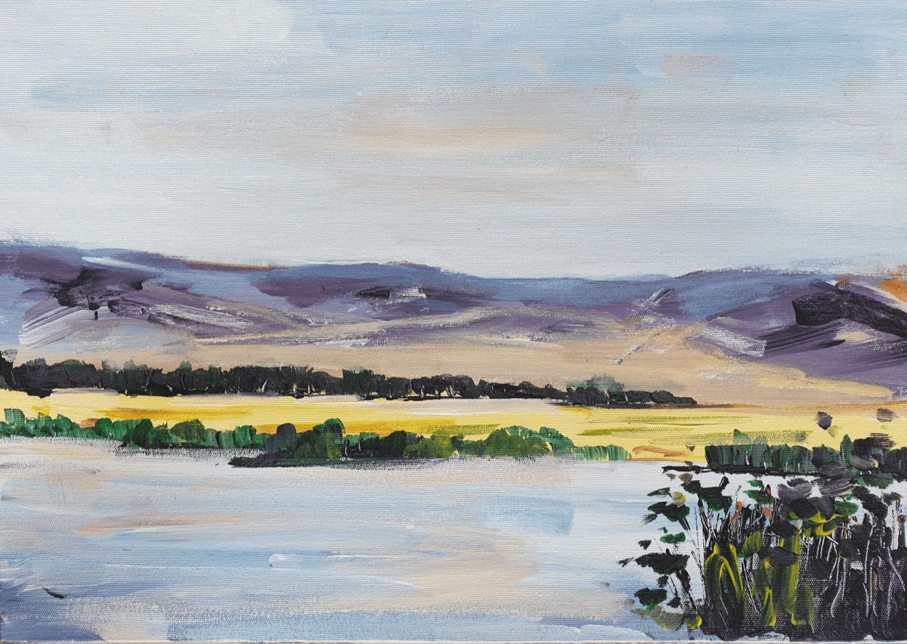
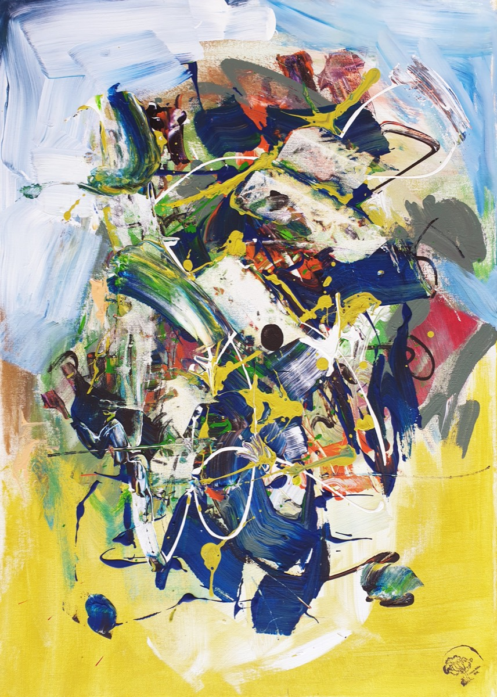
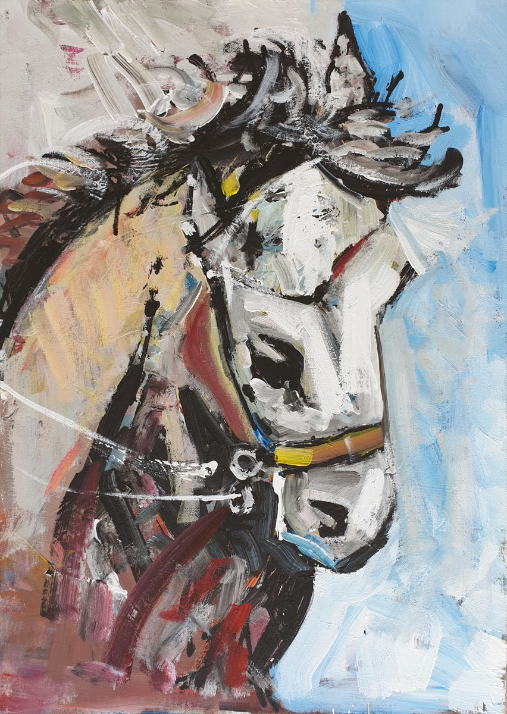

Göl Kıyısı
Sazlıklarla çevrili sakin bir göl, ardında altın sarısı bir tarla ve akşam ışığında morlaşan tepeler.
- Orijinal
- 8.000 TL
- Satışta
- Baskı Numaralı, sınırlı sayıda
- Yakında
- Hazırlanıyor
Galeri
Orijinal eserler ve numaralı, sınırlı sayıda baskılar
ONT, ressam Osman Nihat Tok'un baş harflerinden gelir. Orhan Cebrailoğlu'nun öğrencisi olan Osman Nihat Tok, soyut resim ve şiir tutkunu bir ressamdır. Eserlerinde ışığı ve rengi serbest fırça darbeleriyle anlatır.
Her eserin tek bir orijinali vardır. Baskılar numaralı ve sınırlı sayıdadır.

Sazlıklarla çevrili sakin bir göl, ardında altın sarısı bir tarla ve akşam ışığında morlaşan tepeler.

Sarı ile mavinin buluştuğu bir zeminde lacivert fırça darbeleri, damlatılmış sarı ve beyaz çizgiler; hareketli, enerjik bir kompozisyon.

Gökyüzü mavisine dönük bir at başı; kalın, serbest fırça darbeleri ve koyu konturlarla güçlü bir portre.